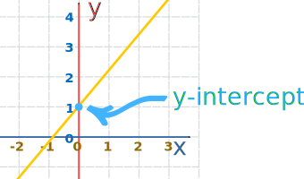
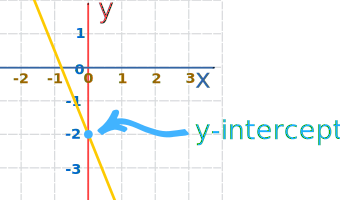

Y-Intercept of a Straight Line
Where a line crosses the y-axis of a graph
Just find the value of y when x equals 0
Example:

In the above diagram the line crosses the y axis at y = 1
Example:

Here the line crosses the y axis at y = −2
Point
The y-intercept is an (x,y) point with x=0, so we show it like this (try dragging the points):